AnyPortrait > マニュアル > クリッピングメッシュのレンダリングの問題
私たちのチームが多くのユーザーから受け取った質問の1つは、「クリッピングメッシュが正常にレンダリングされないこと」です。
レンダリングの問題は、見かけ上同じ問題であっても、異なる原因によるものである可能性があるため、解決するのは簡単ではありません。
クリッピングメッシュに関する問題の場合も、異なる原因が同じ問題を引き起こす可能性があります。
このページでは、ユーザーからのフィードバックに基づいて、代表的な原因とその解決策を紹介します。
クリッピングメッシュに加えて、「マスク（Mask）」機能（関連ページ）も同様に動作しますので、このページで原因を見つけることができます。
このページの一部は、「マスク」機能の問題と解決策について説明しています。
これは、主に「URP」を使用した場合、または「Built-In」レンダリングパイプラインに復元した場合に発生する可能性があります。
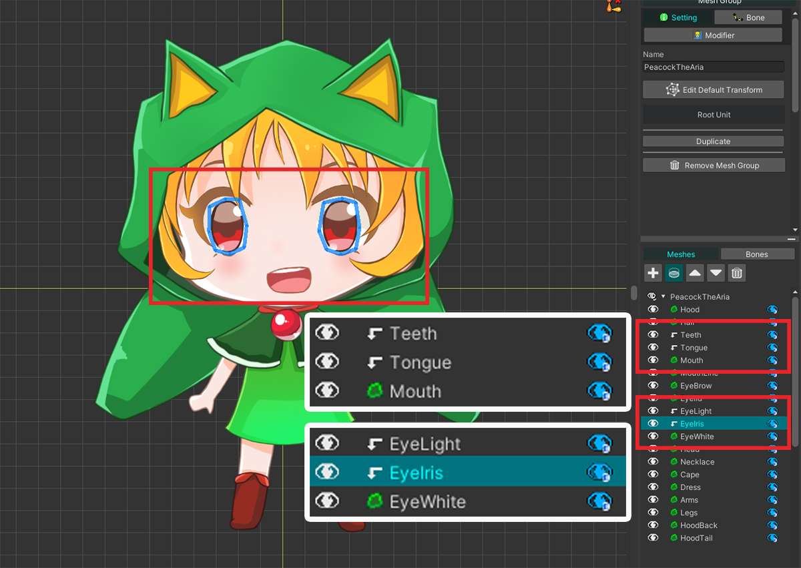
このページで使用されるキャラクターです。
目と口のメッシュがクリッピングメッシュに設定されています。
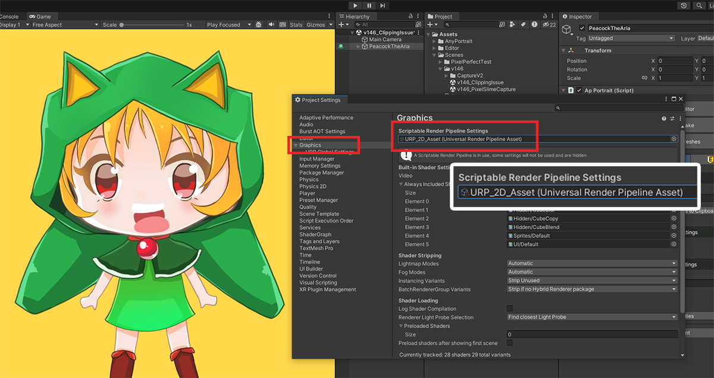
Unityエディタで「Project Settings > Graphics > Scriptable Render Pipeline Settings」で「URP」を適用しました。
続いて、「URP」に設定した後、「材質ライブラリ」を用いて「URP用材質」をキャラクターに適用します。 （関連ページ）
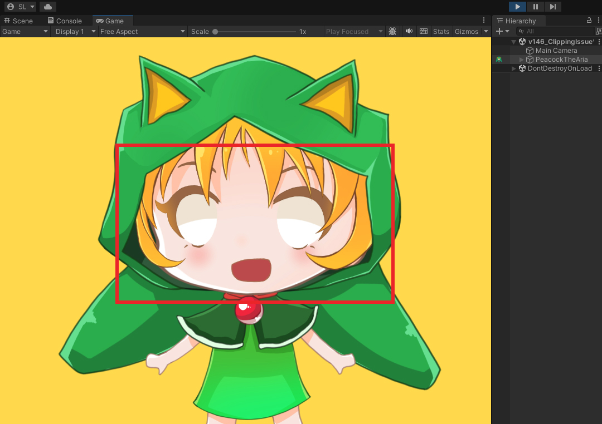
「Bake」をしてゲームを実行しましたが、クリッピングメッシュはレンダリングされません。
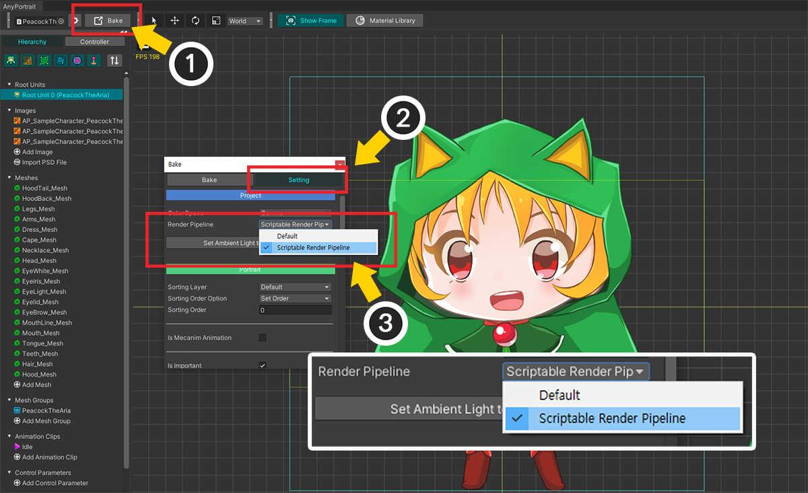
この場合、「レンダリングパイプライン」設定が現在のプロジェクト設定と一致しないために発生した可能性があります。
(1) AnyPortraitエディタの「Bake」ボタンを押します。
(2) 「Setting」タブを選択します。
(3) 「Render Pipeline」の設定が現在のプロジェクトの設定に合っていることを確認してください。
「URP」の場合は「Scriptable Render Pipeline」に設定し、「デフォルトレンダリングパイプライン」を使用する場合は「Default」に設定する必要があります。
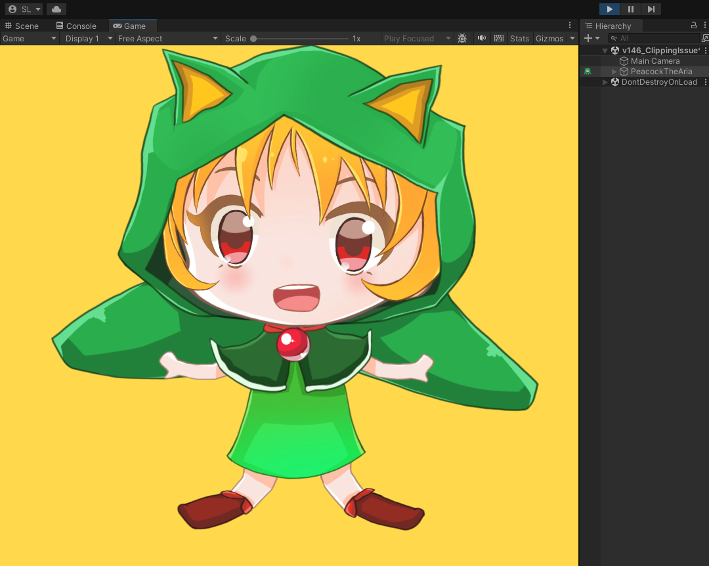
「Bake」をしてゲームを実行すると、クリッピングメッシュが正常にレンダリングされることがわかります。
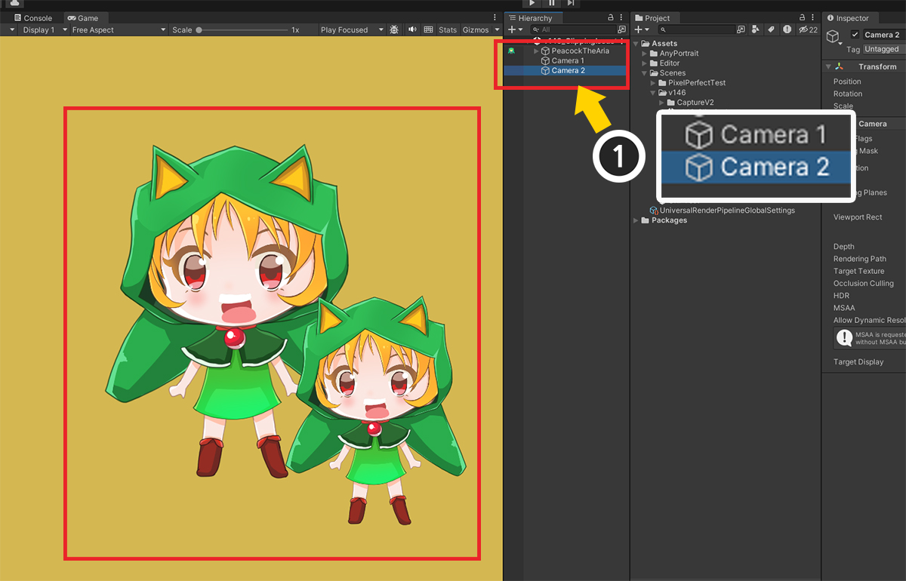
(1) キャラクターをレンダリングする 2 つのカメラをシーンに配置しました。
2つのカメラによって1つのキャラクターが2回レンダリングされるのが見られます。
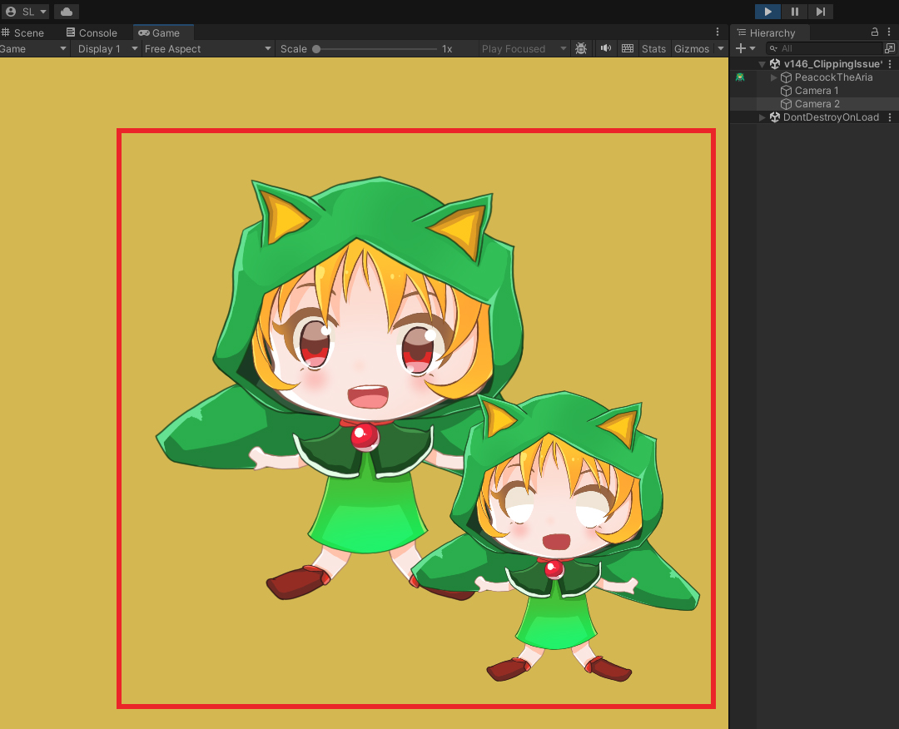
この状態でゲームを実行すると、1つのカメラを除く残りのカメラではクリッピングメッシュが正常にレンダリングされません。
「AnyPortrait」のクリッピングレンダリングは、カメラを参照して動作します。
カメラに「コマンドバッファ」を登録してレンダリングするか、「View Matrix」を活用してマスク品質を最適化するためです。
ちなみに「AnyPortrait」のデフォルト設定は1つのカメラのみを参照します。
したがって、2つ以上のカメラがキャラクターをレンダリングする場合、このデフォルト設定を変更しないと、クリッピングレンダリングは正しく機能しません。
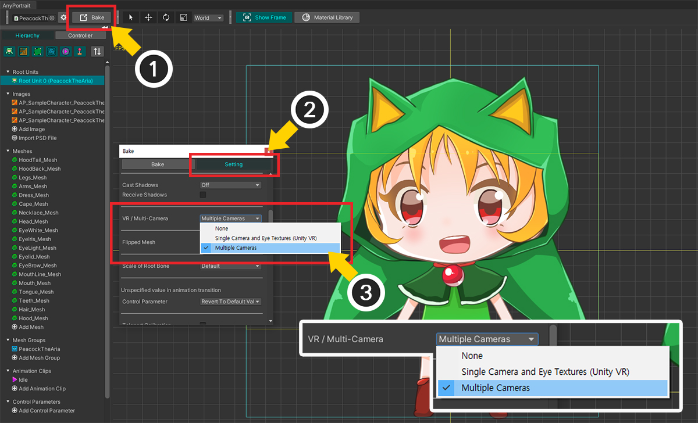
(1) 「Bakeダイアログ」を開きます。
(2) 「Setting」タブを選択します。
(3) 「VR / Multi-Camera」オプションの値を「Multiple Cameras」に変更します。
「Bake」を実行すると問題が解決します。
ただし、この状態では残念ながら、クリッピングメッシュの最適化機能は無効になります。
そのため、低解像度のクリッピングマスクによってレンダリングクオリティが低くなるという問題が発生する可能性があります。
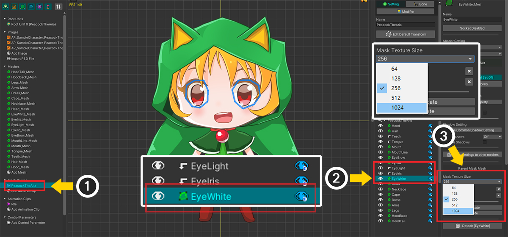
(1) 「メッシュグループ」を選択します。
(2) クリッピングマスクとなるメッシュを選択します。
(3) 「Mask Texture Size」属性の値を変更してクリッピングマスクの解像度を上げます。
表示されるメッシュのサイズと品質によって決定する必要があります。
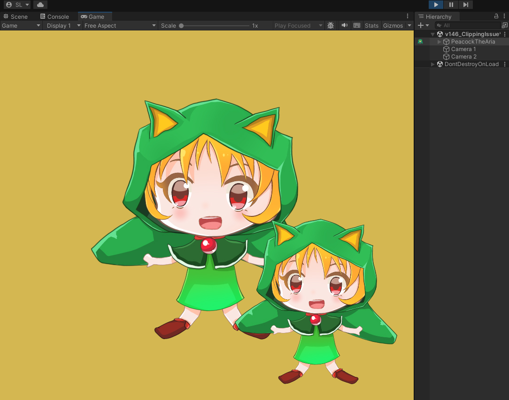
「Bake」をしてゲームを実行すると、クリッピングメッシュが正しく動作することがわかります。
複数のカメラを配置した状態、または「Render Texture」を対象にレンダリングを行う場合には、副次的な課題がさらにあります。
次のマニュアルが役に立ちます。
- 複数のカメラによるレンダリング
- 「Render Texture」でレンダリング
- VRにビルド
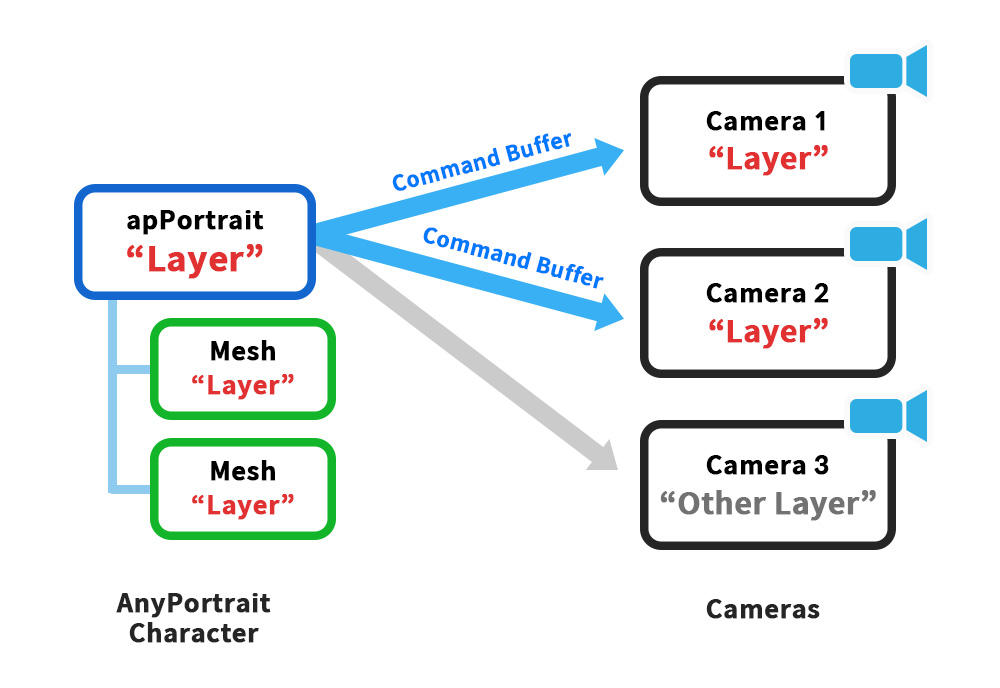
マルチカメラ問題と同様の文脈において、カメラを参照する過程で問題が発生する他の原因は「レイヤー（Layer）」である。
カメラは、「Culling Mask」に含まれる「レイヤー」が設定された「GameObject」のみをレンダリングします。
これを利用して、「AnyPortrait」のメインスクリプトである「apPortrait」は、自分の「レイヤー」を対象にレンダリングできるカメラを見つけ、クリッピングレンダリングのための接続を試みます。
この接続が完了するまで、コマンドバッファなどが作成され、クリッピングレンダリングを実行できます。
ただし、「apPortrait」のレイヤーが奇妙に設定されていると、クリッピングレンダリングの準備作業が失敗する可能性があります。
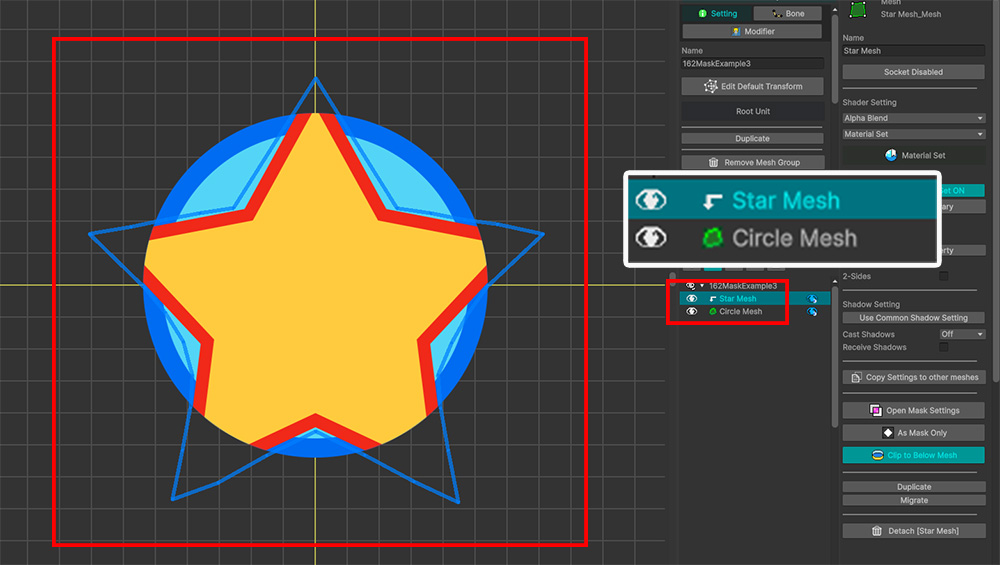
2つのメッシュを持つ例です。
星型メッシュが下の円形メッシュによりクリッピングとなっています。
「Bake」をしてユニティシーンを開きます。
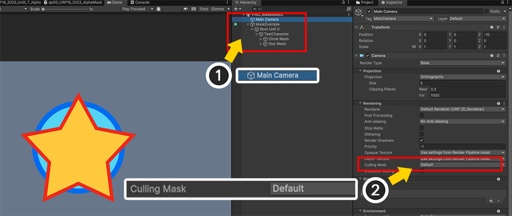
(1) この例のシーンには1つのカメラがあります。
(2) このカメラの「Culling Mask」の値には、「Default」レイヤーのみが含まれています。
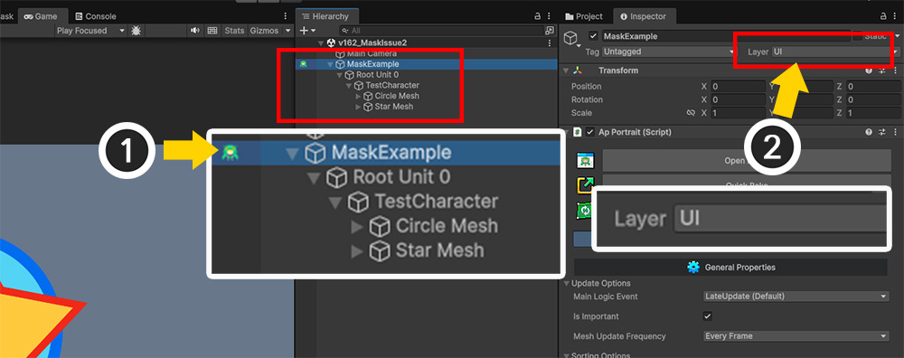
問題を再現しましょう。
(1) キャラクターのルートオブジェクト、つまり「apPortrait」を持つ「GameObject」を選択します。
(2) このオブジェクトのレイヤーを「UI」に変更します。
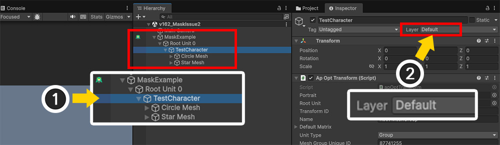
(1) 実際のメッシュを持つ子オブジェクトを選択します。
(2) 子オブジェクトのレイヤーが「Default」になるように設定します。
ゲームを実行すると、メッシュはレンダリングされますが、クリッピングレンダリングが機能しないことがわかります。
子メッシュのレイヤーは「Default」なので、「Culling Mask」の値と同じであるため、レンダリング自体は正しく行われます。
ただし、カメラを探して接続を行う「apPortrait」のレイヤーは、「Culling Mask」に含まれていない「UI」です。
この場合、実際のメッシュレンダリングの有無にかかわらず、「apPortrait」は「このキャラクターをレンダリングするカメラがない」と誤って判断してしまうのです。
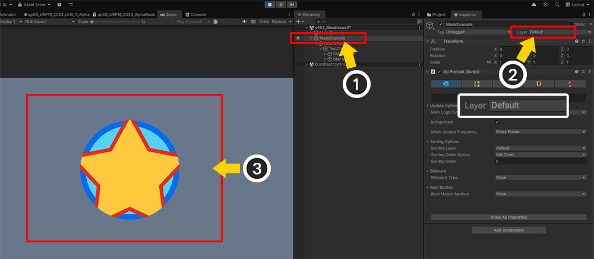
問題を修正するためには、「apPortraitのレイヤーを修正する方法」または「カメラのCulling Mask」を修正する方法」が考えられる。
「apPortrait」のレイヤーを変更する必要のある理由がある場合は、「カメラのCulling Maskを変更する方法」が正しいかもしれませんが、この例では「apPortraitのレイヤーを変更する方法」がより適しています。
(1) 「apPortrait」の「GameObject」を選択します。
(2) レイヤーを「Default」に置き換えて、メッシュのレイヤーと同じに設定します。
(3) ゲームを実行すると、クリッピングの問題が解決したことがわかります。
AnyPortraitのクリッピングマスクは、更新ルーチンの過程でどのように描画されるかを計算します。
その計算は、カメラとキャラクターの位置、属性などを参照します。
更新でマスク関連の計算を行うときと実際にレンダリングされたときの関連要素の状態が一致しない場合、クリッピングマスクとメッシュが正常にレンダリングされない可能性があります。
多くのユーザーが「Cinemachine」、「UniTask」、「Naninovel」などを使用しているこの問題を経験しています。
この問題を扱うマニュアルが別途あるので、それを参照すればよいでしょう。
- 他のアセットとの実行順序の問題
「AnyPortrait v1.6.0」で追加された改善された「マスク(Mask)」機能は、複数のマスクメッシュをターゲットメッシュに渡し、複合的にマスキングを行うことができます。
この機能をシェーダで実装するために、「AnyPortrait v1.6.0」には既存のシェーダをアップグレードしました。
以前のシェーダをそのまま使用している場合、マスク機能は動作しません。
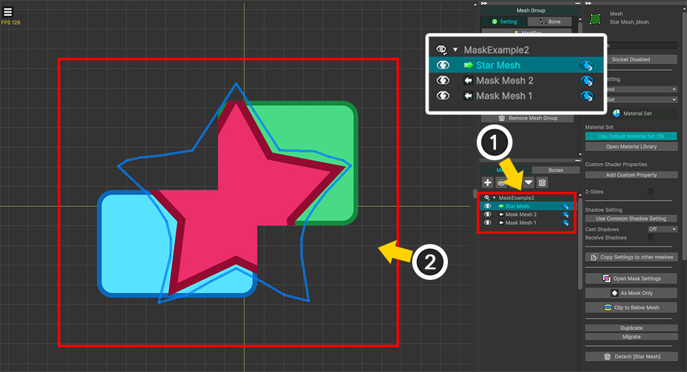
(1) 2つのメッシュが1つのメッシュ（「Star Mesh」）でマスクを渡してクリッピングレンダリングを実装した例です。
(2) マスク機能によって、赤色の星メッシュ（「Star Mesh」）は下の2つの四角メッシュによってクリッピングされてレンダリングされます。
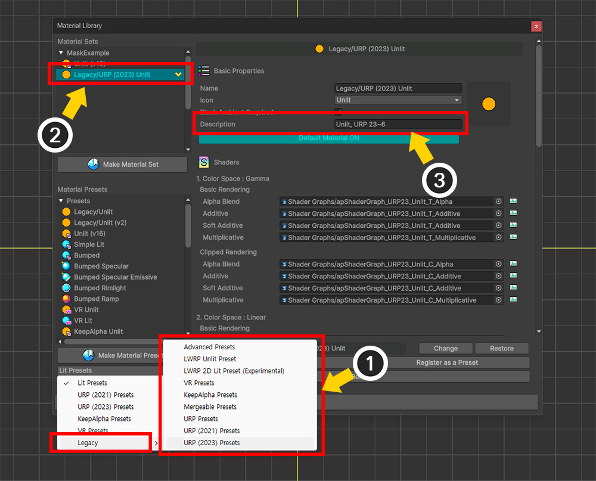
問題を再現するために、マスクをサポートしないシェーダを適用しましょう。
(1) 「マテリアルライブラリ」でマスクをサポートしていない既存のマテリアルプリセットは、「Legacy」のサブメニューに移動しました。ここで、現在の「レンダリングパイプライン」に合った「マテリアルプリセット」を選択してインストールします。
(2) 既存のバージョンの「マテリアルプリセット」に基づいて新しい「マテリアルセット」を作成します。
(3) 既存のバージョンでは、マテリアルセットの「Description」項目に「マスク」に関連するキーワードはありません。
この状態で「Bake」をしてゲームを実行すると、上記のようにマスクが動作しないことがわかります。
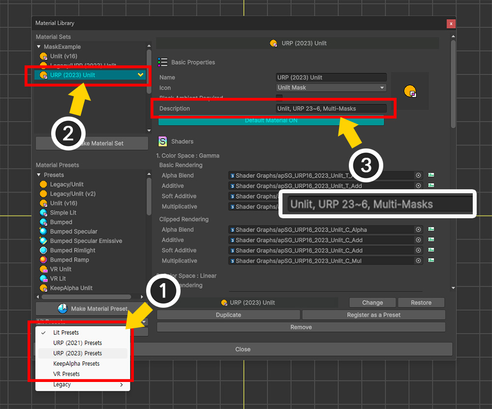
問題を解決するには、マスクをサポートする「最新バージョンのマテリアルプリセット」を使用する必要があります。
(1) 「レガシー」ではなく「最新バージョンのマテリアルプリセット」をインストールします。
(2) マスク対応の「マテリアルプリセット」から「マテリアルセット」を作成します。
(3) 「Description」項目に「Multi-Masks」というキーワードが追加されたことがわかります。このキーワードは「マテリアルセットはマルチチャンネルマスクをサポートする」という意味であり、また「マスクシステムをサポートする」という意味でもあります。
参考
マスク機能で「カスタムプロパティ」を使用する場合は、マテリアルライブラリを介してそのプロパティを持つカスタムシェーダを適用する必要があります。
適切なマテリアルセットが設定された状態で再び「Bake」をしてゲームを実行しましょう。
クリッピングが正常に動作していることがわかります。
「AnyPotrait」のクリッピングレンダリングは「コマンドバッファ(Command Buffer)」と「レンダーテクスチャ(Render Texture)」を利用します。
クリッピングの問題が発生した場合は、これら2つの要素が正常に作成され動作していることを確認すると、問題の原因を見つけやすくなります。
この時、レンダリングの各過程を解析する「フレームデバッガ(Frame Debugger)」を利用すると便利です。
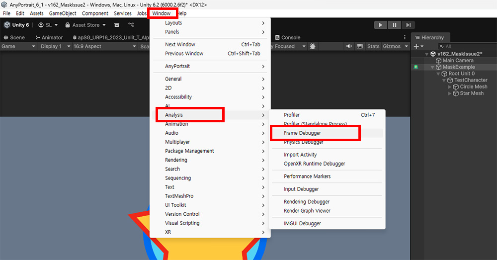
Unity Editor のメニューから「Window > Analysis > Frame Debugger」を実行します。
（Unityのバージョンによってメニューパスは異なる場合があります。）
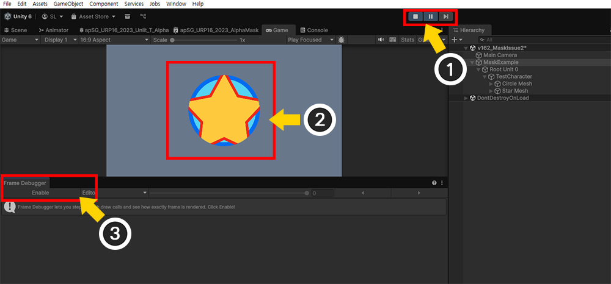
(1) ゲームを実行します。
(2) レンダリングを分析したい瞬間に (3) 「フレームデバッガ」の「Enable」ボタンを押します。
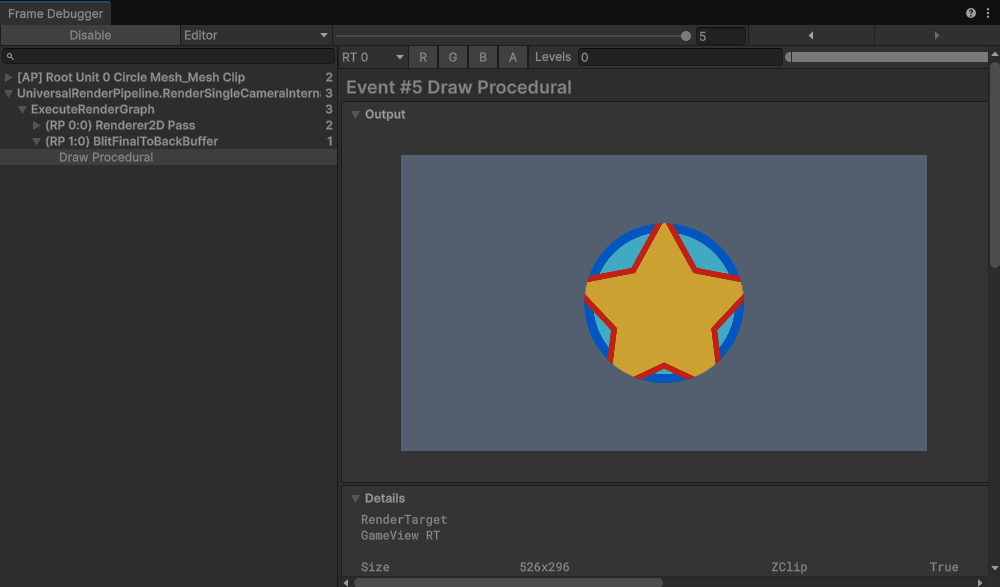
これでゲームが停止し、レンダリングの各詳細ステップを順番に表示できます。
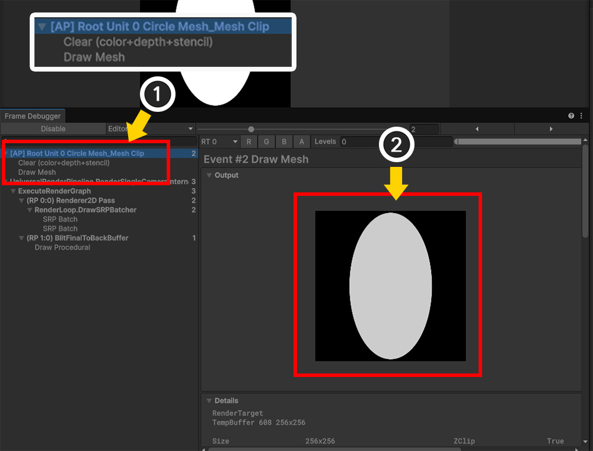
(1) 実際にメッシュをレンダリングする前に、「AP..」という名前のレンダリングステップがあることがわかります。これが「AnyPortrait」のクリッピングレイヤやマスクシステムによって生成された「コマンドバッファ」です。
(2) このコマンドバッファのレンダリング段階では、基本的に白黒のマスクが生成されます。マスクは「Render Texture」タイプで保存され、サイズやレンダリング率などは「カメラの属性」と「AnyPortraitの設定」によって決まります。
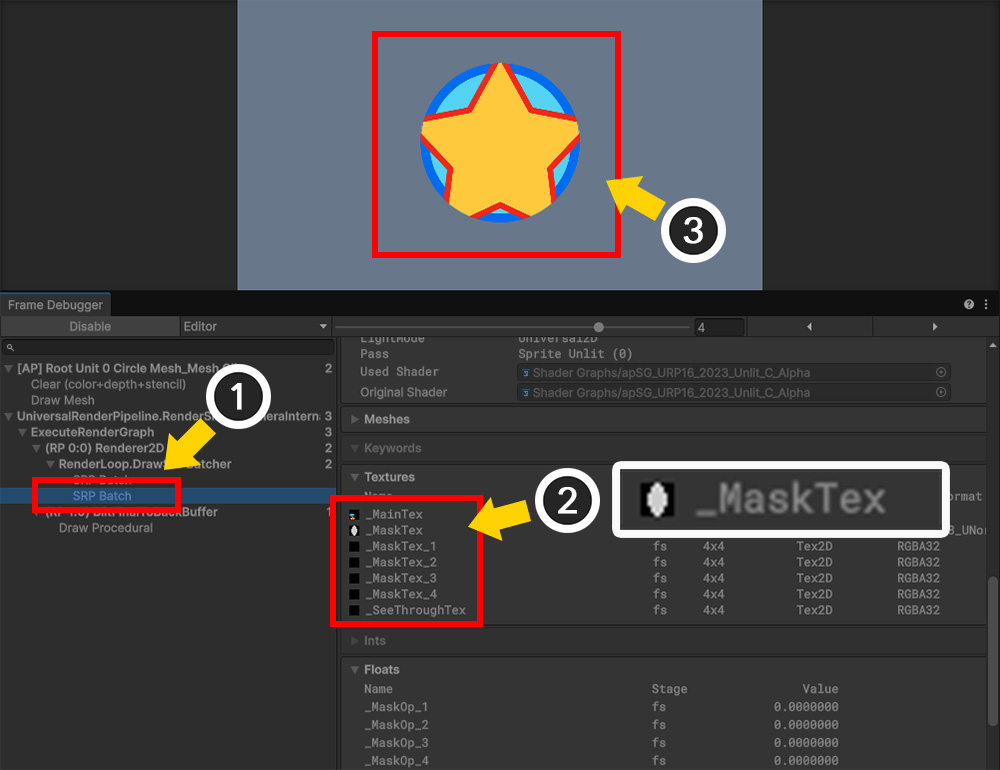
(1) 次に、マスクを受けてクリッピングとなるメッシュがレンダリングされるステップを選択しましょう。
(2) 先にコマンドバッファで生成されたマスク画像が「_MaskTex」などのプロパティに入力されることがわかります。
(3) クリッピングレンダリングが正常に動作していることがわかります。
上記のように、クリッピングレンダリングの過程をフレームデバッガとして見ることができ、これに基づいて問題発生時の原因を推測してみることができます。
1. コマンドバッファが生成されていないか、レンダリングするカメラ数より少なく生成された場合
: 「apPortrait」がカメラを見つけて接続するプロセスが失敗した可能性があります。
マルチカメラの問題、レイヤーの不一致、レンダリングパイプラインの設定などを確認してください。
2. マスク画像が正しく生成されない場合
: マテリアルライブラリで「Alpha Mask」シェーダが正しく動作していない可能性があります。
あるいは、モディファイアによってマスクメッシュが「隠された状態」の場合、マスクイメージが生成されない可能性があります。
3. マスク画像がクリッピングされるメッシュのプロパティに入力がない場合
: クリッピング用のシェーダに適切なプロパティがないか、マスク機能でターゲットプロパティを誤って指定した可能性があります。
4. クリッピングレンダリングのみが行われていない場合
: 上記の手順がすべて正常であった場合は、クリッピング用のシェーダが正しく動作していない可能性があります。
シェーダーコードを確認してください。
レンダリングの問題はさまざまな原因によって発生します。
私たちは、ユーザーから他のアセットや「Renderer Feature」などとの互換性問題、スクリプトからキャラクターをロードする際のエラー、カメラ操作に関する問題などによってもレンダリング問題が発生することが報告されています。
このページの説明で問題が解決しない場合は、お問い合わせください！